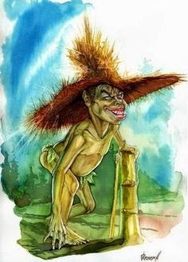

El duende
Se dice que es un niño que murió sin ser bautizado o un niño malo que golpeó a su madre.
Es muy pequeño, lleva un sombrero grande y llora como una criatura.
Tiene una mano de hierro y otra de lana, cuando se acerca a alguien
le pregunta con cuál mano desea ser golpeado. Algunos dicen que,
sin importar la elección, el duende golpeará siempre con la de hierro.
Otros aseguran que los desprevenidos eligen la de lana
y es ésta la que en realidad más duele.
Posee unos ojos muy malignos y dientes muy agudos.
Suele aparecer a la hora de la siesta en los cañadones o quebradas.
Tiene predilección con los niños de corta edad,
aunque también golpea sin piedad a los mayores.
Cuando sale de noche es señal que anda presumiendo a alguna niña pues es muy enamoradizo,
éste caso es grave porque es testarudo y difícil de manejar.
En Catamarca lo describen bajito, cabezón. Con un enorme sombrero de paja,
y en algunos lugares lo visten con un camisón, especie de sotana.
Le llaman también el Sombrerudo y en algunas partes del oeste: Huamanpailita.
